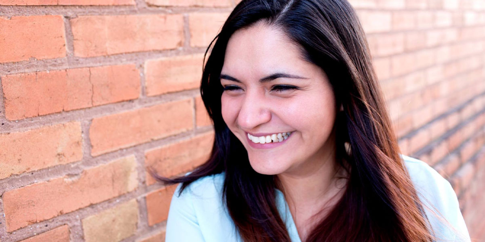

Would you hire me? I'd hire me.
I have more than 2 decades of experience in the graphic design and I'm in the process of
learning
Full Stack Development.
I have worked as a layout artist, corporate graphic designer, product
photographer,
and a marketing coordinator. Having a passion for everything creative, I have continued to grow my
knowledge in UX Design and Full Stack Development as result of my eagerness to learn and grow within the
advertising industry.
View My Portfolio
My Resume:
OBJECTIVE:
Diligent graphic designer with 12+ years of work experience in email marketing, e-commerce design and digital marketing. Currently continuing education in full stack web development and UX Design. Aiming to gain more experience and a proven knowledge of full stack development, effective web design and user experience.
PROFESSIONAL EXPERIENCE
Senior Graphic Designer
Balfour | American Achievement Corporation | GradImages | Dallas, TX | August 2018 - Present
- Led the team on creation of new live-text HTML/CSS email templates to help minimize spam rating and boost open rates.
- Responsible for the design and creation of email, web, and print marketing for several e-commerce websites
- Designed graphics for social media and display ads, as well as graphic elements throughout the websites and homepages for several brands
- Designed brochures, experiential displays, and program ads
- Photo retouching and composite creation
Senior Graphic Designer
Andra Group | HerRoom.com & HisRoom.com | Dallas, TX | June 2017 - August 2018
- Started as Marketing Coordinator and promoted to Senior Graphic Designer within 6 months
- Led the team on creation and production of daily emails planned 2 months in advance
- Designed new email and front page templates to cut down production time and showcase product photography
- Designed several digital lookbooks for different themes, departments and brands
- Planned photoshoots with Art Director and buying team and assisted on set with laydown photography and model shoots
Marketing Coordinator
Rising Fall | Dallas, TX | August 2016 - June 2017
- Manage multiple PR events and marketing projects to promote Rising Fall
- Managing team of freelance content creators and hiring talent to assist in content creation
- Developing and implementing re-branding strategy
- Developing the marketing strategy for new and existing video services
- Oversee implementation of the Marketing strategy - including campaigns, events, digital marketing, and Public Relations
- Efforts are instrumental in spreading brand awareness within the local advertising industry after recently re-branding from previous company with 40-year history in Dallas
SKILLS
Adobe Creative Suite | Photoshop, Illustrator, InDesign, Dreamweaver
MS Office | Word, Excel, PowerPoint, Outlook
EDUCATION
Full Stack Web Development
SMU Professional | Dallas, TX
March 2020 - Present
Bachelor of Applied Science (B.A.Sc.)
Westwood College | Fort Worth, TX
Graduated 2008